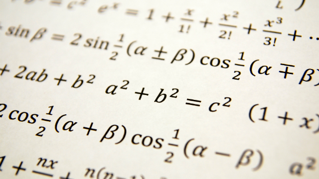

Estudo Autônomo

Projeto realizado em grupo por todos os alunos cursando engenharia no segundo semestre.
Matéria: Matemática da Variação
Cronograma
Período: Segundo Semestre
Data:
agenda
Duração: 4 semanas
Papel do Aluno
Aplicar habilidade de cálculo
Realizar um projeto científico com bases matemáticas
Instrumentos e Técnicas
Python
Excel